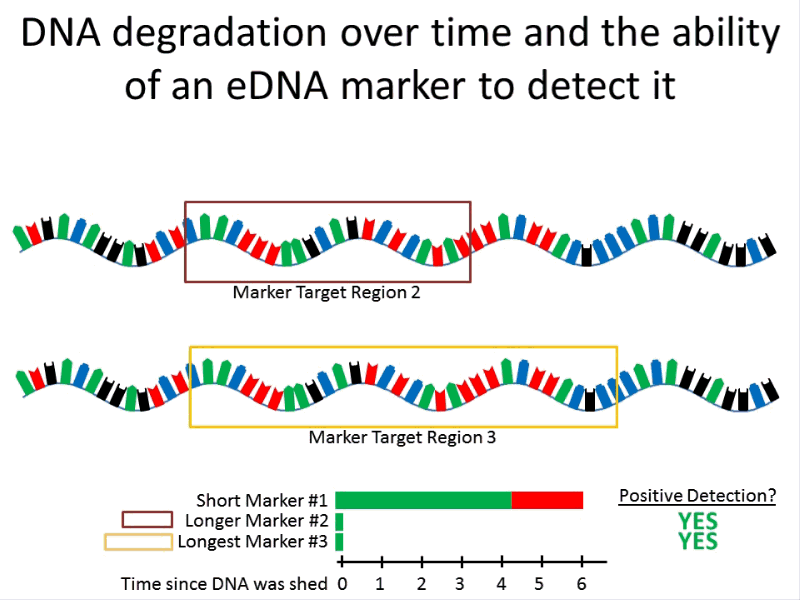
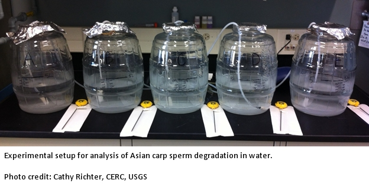
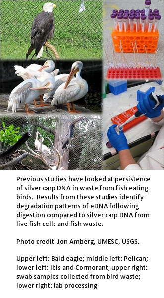

Improving molecular techniques for monitoring Asian carps: Characterizing eDNA associated with spawning, eDNA persistence, and validation of new marker technology

Environmental DNA (eDNA) has become a vital tool for early detection of invasive Asian carp, including bighead carp (BHC) and silver carp (SVC). eDNA is genetic material from cells shed from fish into the water, and can include skin cells, intestinal cells, and sperm and eggs. eDNA can also come from fish carcasses in the water, from boats and fishing gear that have been used in areas with Asian carp, and from waste from animals that have eaten the fish. Our previous work has shown that the amount of eDNA in the water increases with the amount of fish, that feeding the fish increases eDNA, that most eDNA from sperm in the water degrades within a couple days but some stays in the water for at least a few weeks. We have also found other ways that eDNA enters the water including via fish-eating birds (bald eagles, cormorants, pelicans) that shed silver carp eDNA in their waste, , or in fish slime deposited on metal surfaces which was found to persist for at least 28 days. The presence, relative quantity and quality of silver carp eDNA in the Wabash River (Indiana) was also characterized in response to the movement of telemetry tagged fish.
Further, studies were completed to compare the microbes present in the digestive tracts of gizzard shad and silver carp – known as microbial source tracking (MST); it is similar to eDNA but focuses on the detection of a bacteria unique to the target species instead of the eDNA of the target species. Bacteria unique to silver carp were identified which may allow the use of MST to supplement surveillance of Asian carp eDNA.
This year (2014) we will focus on the validation of new genetic markers for use in eDNA monitoring programs, data development to determine the applicability of MST within eDNA surveillance programs, and characterize the eDNA that comes from Asian carp spawning in the Missouri River, where they are already established. Our studies focus on improving the usefulness of eDNA monitoring to managers working to stop the spread of Asian carp.

This spring (2014) we will measure Asian carp eDNA over time at a Missouri River site downstream of multiple spawning areas before and during spawning. We will measure the amount of Asian carp eDNA in water samples. The amount of eDNA will be related to the numbers of eggs and larvae counted in matched samples (water samples taken at the same time and place). The time since the eDNA was released by the carp will be estimated and these results will be related to the average age of AC eggs and larvae in matched samples. We will also test for substances which interfere with the eDNA measurement techniques and can lead to false negatives.
We will also be validating markers developed by USGS and the U.S. Army Corps of Engineers (USACE) as part of an inter-laboratory validation study coordinated by USGS and the U.S. Fish and Wildlife Service (FWS) Whitney Genetics Laboratory. A suite of new markers will be evaluated for incorporation by the FWS into its eDNA surveillance program. One potential marker is a USGS-designed allelic discrimination marker which can detect the DNA of bighead carp and silver carp in a single sample, potentially reducing by half the number of analyses required.
Additionally, samples will be processed from multiple environments to assess the utility of the MST-developed markers for bacteria specific to Asian carp. Pending these analyses, MST-specific markers will be validated for potential incorporation in eDNA surveillance programs.
This project builds on our previous successes at understanding eDNA in a laboratory setting, and will extend that work into the field. Results from the spawning study will have relevance for prediction of population sizes and identification of spawning areas and spawning events. Newly developed methods will help identify the age of eDNA in a sample, and this will be useful in predicting whether the eDNA came from a live fish rather than a carcass or waste from a fish-eating bird. We will also develop methods to detect the effects of substances which mask the presence of eDNA in environmental samples used in monitoring; this effort is vital to avoid false negatives in monitoring samples. Overall, our results will lead to better interpretation of eDNA detections and better enable determination of the linkage between detected DNA in environmental samples and the presence of live fish.
- In fish kept in tanks in the laboratory, the amount of eDNA can predict the population density (g/L) of fish in the water, within a factor of 10.
- Temperature did not change eDNA amounts, but feeding increased eDNA in water from tanks of Asian carp, suggesting that outside of the spawning season, most eDNA comes from intestinal wall cells that are shed in feces.
- In a laboratory experiment, most eDNA from sperm in the water was rapidly degraded within a couple days, but a small fraction persisted for at least a few weeks.
- Substances present in some water samples can mask the presence of eDNA. With partners at the U.S. Army Corp of Engineers, we are developing methods to detect inhibition.
- Fish-eating birds shed silver carp DNA in their waste for up to 1 week following a single meal of silver carp.
- Silver carp DNA in fish-eating bird waste or in slime of silver carp deposited on metal sheets persisted for >28 d despite being exposed to temperatures >30°C and natural sunlight conditions.
- USGS coordinated an inter-laboratory validation study with FWS and USACE that validated a new eDNA extraction kit. The kit is now in use by the FWS-Whitney Genetics Laboratory to process samples for the FWS eDNA surveillance program. The new extraction kit costs ~75% less than the old kit, takes less time to use and extracts more DNA than the previous kit.
- Multiple new markers have been designed for the detection of the DNA of bighead carp and silver carp including a new allelic discrimination marker and a series of increasing length “stair-step” markers. These new markers will be validated in 2014.
- Long sequences (>1300 bp) of silver carp were only detected following a spawning event on the Wabash River, suggesting that DNA sequences rapidly degrade to fragments <1300 bp. Understanding the degradation pattern of DNA could be extremely useful to the interpretation of eDNA detections.
Part 1 of report on ECALS studies of factors affecting eDNA shedding rates
Part 2 of report on ECALS studies of factors affecting eDNA shedding rates
Manuscript on eDNA shedding rates to be published in Summer 2014
Report: Ye, L., Amberg, J., Chapman, D., Gaikowski, M., Liu, W-T, (2014) Fish gut microbiota analysis differentiates physiology and behavior of invasive Asian carp and indigenous American fish. The ISME Journal 8, 541-551 [http://www.nature.com/ismej/journal/v8/n3/abs/ismej2013181a.html] Midwest Fish and Wildlife Conference, Asian Carp Symposia, January 29, 2014
- Advancements in Markers for the Detection of Bigheaded Carp DNA from Environmental Samples
- Microbial Source Tracking and Its Potential to Assist eDNA Assay for Asian Carp Monitoring
Oral presentation “DNA shedding rates of Asian Carps, for use in understanding field collections of environmental DNA.”
- 2013 International Conference on Aquatic Invasive Species; Niagara Falls, Ontario, Canada
- 2013 International Association for Great Lakes Research; West Lafayette, IN
- 2013 International Congress for Conservation Biology; Baltimore, MD
- 2013 American Fisheries Society; Little Rock, AR
Cathy Richter, crichter@usgs.gov
Columbia Environmental Research Center, USGS
573-876-1841
Duane Chapman, dchapman@usgs.gov
Columbia Environmental Research Center, USGS
573-876-1866
Katy Klymus, kklymus@usgs.gov
Columbia Environmental Research Center, USGS
573-876-1719
Jon Amberg, jamberg@usgs.gov
Christopher Rees, crees@usgs.gov
S. Grace McCalla, smcalla@usgs.gov
Christopher Merkes, cmerkes@usgs.gov
Mark Gaikowski, mgaikowski@usgs.gov